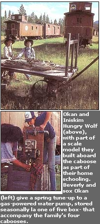

Okan and Iniskim Hungry Wolf (above), with part of a scale model they built aboard the caboose as part of their home schooling. Beverly and sox Okan (left) give a spring tune-up to a gas-powered water pump, stored seasonally la one of five box- that accompany the family's four cabooses.